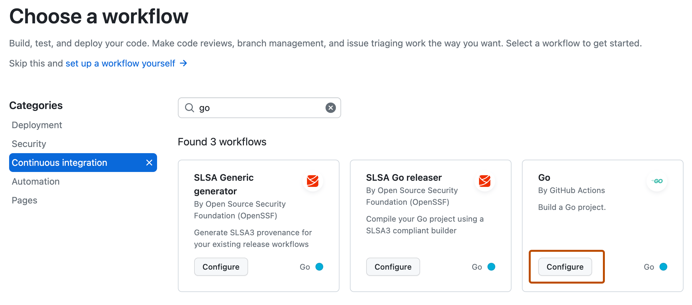

Learn how to create a continuous integration (CI) workflow to build and test your Go project.
Introduction
This guide shows you how to build, test, and publish a Go package.
GitHub-hosted runners have a tools cache with preinstalled software, which includes the dependencies for Go. For a full list of up-to-date software and the preinstalled versions of Go, see GitHub-hosted runners.
Prerequisites
You should already be familiar with YAML syntax and how it's used with GitHub Actions. For more information, see Workflow syntax for GitHub Actions.
We recommend that you have a basic understanding of the Go language. For more information, see Getting started with Go.
Using a Go workflow template
To get started quickly, add a workflow template to the .github/workflows directory of your repository.
GitHub provides a Go workflow template that should work for most Go projects. The subsequent sections of this guide give examples of how you can customize this workflow template.
On GitHub, navigate to the main page of the repository.
Under your repository name, click Actions.
If you already have a workflow in your repository, click New workflow.
The "Choose a workflow" page shows a selection of recommended workflow templates. Search for "go".
Filter the selection of workflows by clicking Continuous integration.
On the "Go - by GitHub Actions" workflow, click Configure.

Edit the workflow as required. For example, change the version of Go.
Click Commit changes.
The go.yml workflow file is added to the .github/workflows directory of your repository.
Specifying a Go version
The easiest way to specify a Go version is by using the setup-go action provided by GitHub. For more information see, the setup-go action.
To use a preinstalled version of Go on a GitHub-hosted runner, pass the relevant version to the go-version property of the setup-go action. This action finds a specific version of Go from the tools cache on each runner, and adds the necessary binaries to PATH. These changes will persist for the remainder of the job.
The setup-go action is the recommended way of using Go with GitHub Actions, because it helps ensure consistent behavior across different runners and different versions of Go. If you are using a self-hosted runner, you must install Go and add it to PATH.
Using multiple versions of Go
name: Go
on: [push]
jobs:
build:
runs-on: ubuntu-latest
strategy:
matrix:
go-version: [ '1.19', '1.20', '1.21.x' ]
steps:
- uses: actions/checkout@v6
- name: Setup Go ${{ matrix.go-version }}
uses: actions/setup-go@v5
with:
go-version: ${{ matrix.go-version }}
# You can test your matrix by printing the current Go version
- name: Display Go version
run: go version
Using a specific Go version
You can configure your job to use a specific version of Go, such as 1.20.8. Alternatively, you can use semantic version syntax to get the latest minor release. This example uses the latest patch release of Go 1.21:
- name: Setup Go 1.21.x
uses: actions/setup-go@v5
with:
# Semantic version range syntax or exact version of Go
go-version: '1.21.x'
Installing dependencies
You can use go get to install dependencies:
steps:
- uses: actions/checkout@v6
- name: Setup Go
uses: actions/setup-go@v5
with:
go-version: '1.21.x'
- name: Install dependencies
run: |
go get .
go get example.com/octo-examplemodule
go get example.com/octo-examplemodule@v1.3.4
Caching dependencies
You can cache and restore dependencies using the setup-go action. By default, caching is enabled when using the setup-go action.
The setup-go action searches for the dependency file, go.sum, in the repository root and uses the hash of the dependency file as a part of the cache key.
You can use the cache-dependency-path parameter for cases when multiple dependency files are used, or when they are located in different subdirectories.
You can use the same commands that you use locally to build and test your code. This example workflow demonstrates how to use go build and go test in a job:
name: Go
on: [push]
jobs:
build:
runs-on: ubuntu-latest
steps:
- uses: actions/checkout@v6
- name: Setup Go
uses: actions/setup-go@v5
with:
go-version: '1.21.x'
- name: Install dependencies
run: go get .
- name: Build
run: go build -v ./...
- name: Test with the Go CLI
run: go test
Packaging workflow data as artifacts
After a workflow completes, you can upload the resulting artifacts for analysis. For example, you may need to save log files, core dumps, test results, or screenshots. The following example demonstrates how you can use the upload-artifact action to upload test results.